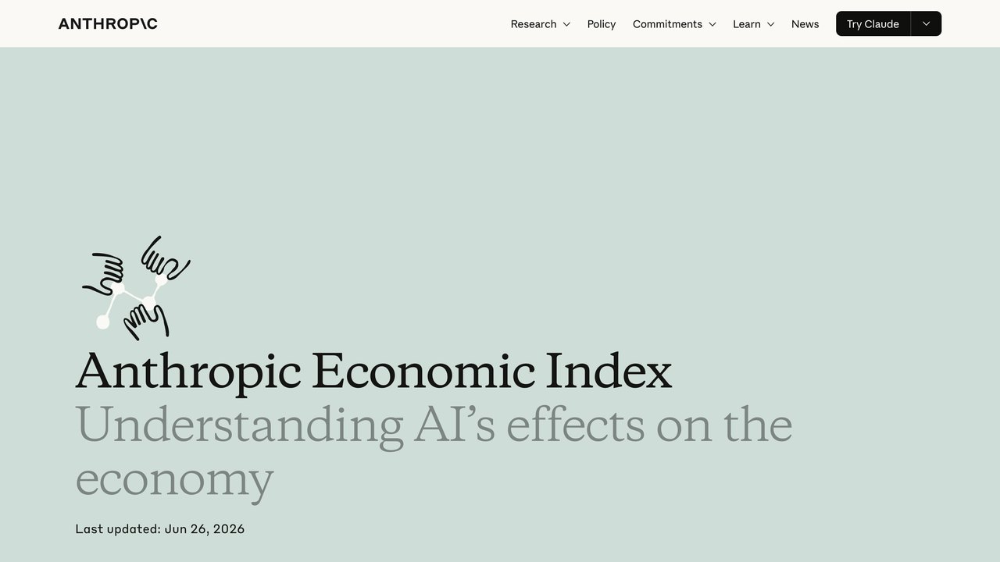

Casi ningún puesto de trabajo es una sola tarea repetida todo el día. Un abogado redacta escritos, pero también negocia, interpreta matices legales ambiguos y da confianza a un cliente asustado. Un desarrollador escribe código, pero también decide arquitectura, hace de puente con negocio y depura fallos que nadie más entiende. La IA avanza de forma muy desigual dentro de esa mezcla de tareas — rápido en unas, torpe todavía en otras — y esa desigualdad es lo que determina el impacto real, no un veredicto binario de "tu trabajo desaparece o no".
El Future of Jobs Report 2025 del Foro Económico Mundial, con datos de más de 1.000 empresas empleadoras, estima que de aquí a 2030 la automatización desplazará 92 millones de puestos a nivel global mientras crea 170 millones nuevos — un saldo neto positivo de 78 millones, pero repartido de forma muy desigual entre roles. La diferencia por nivel de responsabilidad es la parte que más suele sorprender: el informe calcula que la IA puede automatizar hasta el 67% de las tareas de un representante comercial, frente a solo el 21% de las de su responsable de ventas; en analistas de mercado, la brecha es del 53% frente al 9% en sus managers. Esas cifras de tareas automatizables por puesto son las que recogía esta guía del informe; no hemos podido recomprobarlas en la revisión de octubre de 2026, tómalas como orden de magnitud. Lo que sí está confirmado en el material del propio Foro es el balance global: 170 millones de empleos creados, 92 millones desplazados y 78 millones netos hasta 2030, a partir de proyecciones de empleadores. El patrón se repite en casi todos los sectores: cuanto más se acerca una función a la supervisión y la decisión, menor es la exposición.
1. Las dos variables que de verdad predicen exposición
¿La tarea se resuelve manipulando texto, datos estructurados o código? Alta exposición. ¿Requiere presencia física, percepción del entorno real o destreza manual? Baja exposición, por ahora.
¿Un error se corrige fácil y barato después? Alta exposición. ¿Un error tiene consecuencias legales, médicas o de seguridad graves e inmediatas? Baja exposición — ahí se exige supervisión humana por diseño, no solo por capacidad técnica.
Cruza ambas variables y verás por qué "redactar un primer borrador de contrato estándar" tiene mucha más exposición que "decidir la estrategia de defensa en un juicio complejo", aunque las haga la misma persona el mismo día.
2. Tareas de alta exposición, sector por sector
Atención al cliente
Consultas repetitivas de primer nivel (estado de un pedido, cómo cambiar una contraseña, preguntas frecuentes) ya se resuelven con agentes de IA en buena parte de las grandes empresas. Lo que queda para personas es la escalada de casos complejos o emocionalmente delicados.
Entrada y procesamiento de datos
Transcribir, clasificar, extraer campos de documentos — tareas mecánicas de manipulación de información estructurada que la IA hace más rápido y, en muchos casos, con menos errores que un proceso manual repetitivo.
Primer borrador de contenido y código
Redactar una primera versión de un artículo, un email de marketing o una función de código estándar es donde la IA aporta más ahorro de tiempo — con la condición, explicada en el resto de esta guía, de que alguien revise ese borrador antes de publicarlo o desplegarlo.
Revisión legal y contable rutinaria
Cotejar cláusulas contra una plantilla estándar, revisar facturas contra un presupuesto, verificar que un documento cumple un checklist regulatorio conocido — trabajo de patrón repetitivo que se automatiza bien, con supervisión de un profesional cualificado sobre las excepciones.
Análisis y reporting
Construir el informe mensual recurrente, cruzar hojas de cálculo, generar el primer resumen ejecutivo a partir de datos ya existentes — el patrón se repite: cuanto más definido y recurrente el formato del informe, más rápido lo produce un modelo, dejando a la persona la interpretación de qué significa realmente el dato para el negocio.
Traducción e interpretación de documentos
Traducir manuales técnicos, documentación interna o contenido de producto entre idiomas ya no requiere pasar por una agencia para textos de volumen medio — queda para un traductor profesional la revisión de matices culturales, tono de marca y textos con implicaciones legales donde un error de matiz sale caro.
3. Lo que sigue dependiendo de una persona
Juicio sobre una situación física cambiante
Reparar una avería no estándar, diagnosticar un problema mecánico por sonido o vibración, adaptar una instalación a un espacio irregular — la robótica avanza más despacio que el software por coste de hardware y por lo variable del mundo físico real.
Relaciones que dependen de confianza acumulada
Negociar una venta compleja, dar una mala noticia médica, gestionar un conflicto de equipo — tareas donde el valor no es solo la información transmitida, sino quién la transmite y la relación de confianza construida con el tiempo.
Responsabilidad legal final
Firmar una auditoría, autorizar un tratamiento médico, aprobar un diseño estructural — en la mayoría de jurisdicciones, la responsabilidad legal final de estas decisiones no se puede delegar en un sistema automatizado, y eso mantiene a una persona en el centro de la decisión por diseño regulatorio, no solo técnico.

Tres profesiones, tarea por tarea
Aplicar el marco de las dos variables a una profesión completa, no solo a una tarea suelta, es lo que hace visible por qué "¿va a desaparecer mi trabajo?" es la pregunta equivocada. Tres ejemplos, desglosados:
Abogacía
Alta exposición: primer borrador de contratos estándar, resumen de jurisprudencia, cotejo de cláusulas contra plantilla. Baja exposición: estrategia de negociación, interpretación de un matiz legal ambiguo sin precedente claro, la relación de confianza con el cliente que decide si sigue pagando honorarios.
Sanidad
Alta exposición: triaje inicial de síntomas comunes, documentación clínica, lectura de apoyo en imagen para patrones conocidos. Baja exposición: el diagnóstico final sobre un caso atípico, la conversación para dar una noticia difícil, la decisión clínica que exige asumir responsabilidad legal — ninguna de las tres se delega hoy en un sistema automatizado, ni por capacidad técnica ni por marco regulatorio.
Desarrollo de software
Alta exposición: escribir una función estándar a partir de una especificación clara, generar tests unitarios, traducir código entre lenguajes. Baja exposición: decidir la arquitectura de un sistema complejo, depurar un fallo intermitente que nadie más entiende, traducir un requisito de negocio ambiguo en una solución técnica concreta — la parte del oficio que menos se parece a "escribir código" y más a "pensar en sistemas".
«La IA no compite por tu puesto de trabajo entero. Compite, tarea por tarea, por las horas de tu semana que menos criterio exigen — y esas son precisamente las que menos deberías querer conservar.
— Redacción El Telar
4. Tres cosas que hacer con esta información, no solo leerla
Saber en qué categoría cae cada tarea de tu trabajo solo sirve si se traduce en una decisión concreta. Tres pasos prácticos, en orden de prioridad:
Anota durante una semana en qué tareas concretas se va tu tiempo. La mayoría de la gente subestima cuánto de su jornada es mecánico hasta que lo mide de verdad.
La habilidad que más valor gana no es "usar IA", es verificar rápido el resultado de la IA en tu campo — saber, con criterio propio, cuándo una respuesta suena bien pero está mal.
Negociación, relación con clientes, juicio sobre casos ambiguos. Cuanto más tiempo dediques ahí en vez de en tareas mecánicas, más protegido queda tu valor a medio plazo.
Tan caro es paralizarte por miedo como ignorar el cambio por comodidad. Los dos errores llevan al mismo sitio: llegar tarde a adaptarte cuando el cambio ya es visible para todos.
Tus derechos cuando la IA interviene en tu trabajo (octubre de 2026)
Además de qué tareas cambian, importa quién decide y qué puedes saber. Cuatro novedades y normas que conviene tener a mano en España:
- Real Decreto 723/2026 (publicado en el BOE el 15 de septiembre de 2026 y en vigor desde el 5 de octubre). Obliga a la empresa a entregarte por escrito los elementos esenciales de tu relación laboral y, según su texto, a informarte de si usa sistemas algorítmicos o automatizados de toma de decisiones y, cuando afectan a decisiones sobre condiciones de trabajo, a explicar sus reglas y criterios (jornada, tareas, salario, progresión, despido…). Es una transposición parcial de la Directiva (UE) 2019/1152. Lo puedes consultar en el BOE.
- Artículo 64.4.d del Estatuto de los Trabajadores (añadido por la Ley 12/2021): el comité de empresa tiene derecho a ser informado de los parámetros, reglas e instrucciones de los algoritmos o sistemas de IA que afecten a decisiones sobre condiciones de trabajo, acceso y mantenimiento del empleo, incluida la elaboración de perfiles. Si tienes representantes, pregúntales.
- El AI Act trata como alto riesgo los sistemas de IA usados para seleccionar, evaluar o gestionar trabajadores. Sus obligaciones completas se han aplazado al 2 de diciembre de 2027 según el calendario de la Comisión. Detalle en El AI Act explicado.
- Fuera de España: California firmó una ley que impide despedir o sancionar a un trabajador basándose solo en un sistema de IA y obliga a avisar si intervino (noticia). No se aplica aquí, pero indica hacia dónde va el debate.
Estos son textos legales resumidos: para un caso concreto, consulta con un profesional o con la representación de los trabajadores. Esta guía es informativa.
Un dato más para la sección 4. Un estudio de Berkeley con 1.222 personas encontró que 10 minutos de ayuda de una IA bastaron para que, al quitársela, rindieran peor y abandonaran antes en tareas concretas (noticia). No prueba daño duradero, pero sugiere no delegar siempre la parte difícil. Es una razón más para trabajar tus tareas de criterio sin ayuda de vez en cuando.
| Si te pasa esto… | Qué puedes hacer |
|---|---|
| Tu empresa usa una IA para asignar turnos, tareas o evaluar tu rendimiento | Pide por escrito que te informen de que existe y de qué criterios usa (RD 723/2026) o hazlo a través de tus representantes |
| Te sancionan o despiden y crees que decidió un algoritmo | Pide que te expliquen el motivo concreto y guarda las comunicaciones; consulta a un profesional o sindicato |
| Tu puesto cambia por la IA | Pide qué tareas cambian y qué formación se ofrece; empieza por la auditoría de tu semana de la sección 4 |
5. Un vistazo rápido, sector por sector
Ningún sector es uniformemente alto o bajo en exposición — dentro de cada uno conviven tareas muy automatizables con otras que no lo son. Esta tabla resume la tendencia dominante de cada sector a día de hoy, no una sentencia sobre el sector entero.
| Sector | Tendencia dominante | Lo que se mantiene humano |
|---|---|---|
| Banca y seguros | Alta en análisis de riesgo rutinario, tramitación | Asesoramiento patrimonial complejo, gestión de siniestros delicados |
| Retail y comercio | Alta en atención de primer nivel, gestión de inventario | Venta consultiva de producto complejo, experiencia en tienda física |
| Educación | Media en corrección y material de apoyo | Motivación, gestión de aula, detección de dificultades individuales |
| Construcción | Baja en obra, media en la parte administrativa | Ejecución física, adaptación a imprevistos del terreno |
| Marketing y publicidad | Alta en primer borrador, variantes de anuncio, análisis de datos | Estrategia de marca, relación con el cliente, criterio creativo final |
Test rápido: ¿cuál es tu exposición real?
Marca las frases que describen tu semana normal de trabajo. Es la misma lógica de las dos variables de la sección 1, aplicada a tu caso concreto — sin enviar nada a ningún sitio, se calcula aquí mismo en tu navegador.
Marca al menos una casilla para ver tu resultado.